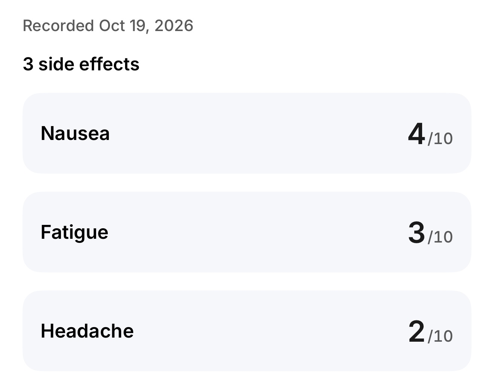

How do I log GLP-1 side effects?
Tap the plus button in SimplyDose and choose Log Side Effects. Record what you felt, set the severity ratings, and tap Save to record today’s entry.
See the steps
Make a record you can find later
Open the side-effect log
Tap the plus button and choose Log Side Effects.
Record what you felt
Set a rating for each symptom you noticed. The number describes your experience. Tap Save to record it for today.
Find the record again
On Home, open Side effects under Today to see the latest record. For recent ratings, open Progress, choose View details in Side effects, and look for Recorded ratings. For older entries, open Symptom History in Profile.
What can I bring to a follow-up?
Look for dates and symptoms you want to discuss. Visit Summary brings together your logged records for the period you select. Ask your care team about symptoms that concern you.
See how Visit Summary works Learn how to review weight trendsKeep your records in SimplyDose.
An account and active SimplyDose Premium subscription are required for tracking features.
View on the App Store